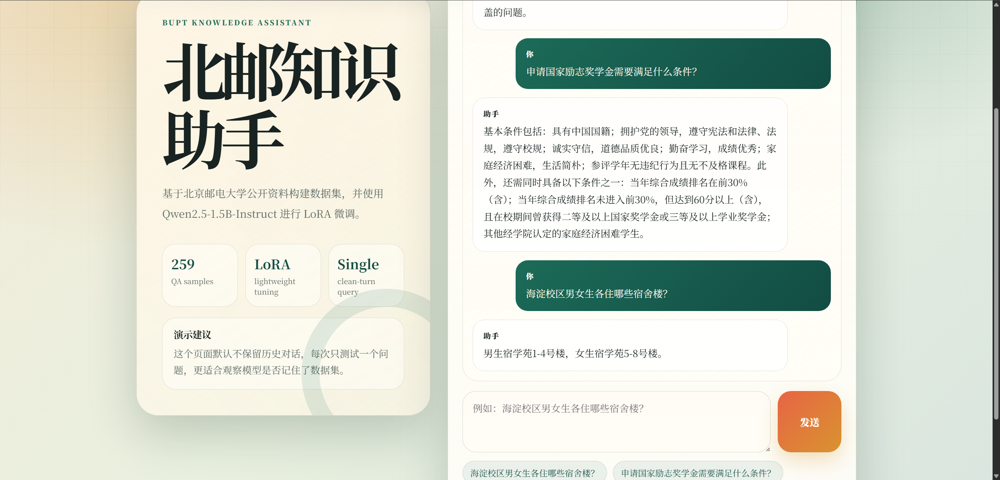

BUPT校园知识问答数据集构建
1 About this Project
本项目目标是构建一个北京邮电大学校园知识问答数据集——从公开网页爬取原始语料，经过清洗、切块、API改写、过滤去重等流程，最终产出 259 条高质量短问短答样本。数据集采用 ms-swift 兼容的 messages JSONL 格式，可直接用于下游 LoRA 微调任务。
1.1 项目动机
本项目是课程实践，核心目标不是训出好模型，而是走通”非结构化网页文本 → 结构化 QA 数据集”的完整构建管线。
三个核心问题：
- 爬取与清洗：不同网站 DOM 结构各异，如何稳定提取正文并去重？
- 长文本切分：一篇文章上千字、涵盖多个知识点，切成多长的块才适合生成 QA？
- 质量过滤：大模型生成的 QA 可能编造、冗余或多问，程序层面如何拦截？
项目以北京邮电大学为场景，覆盖爬虫、清洗、切块、API 改写、过滤的全流程。下游的 LoRA 微调仅用于验证数据集可用性——重点在数据，不在模型。
1.2 系统架构
爬虫采集 ──→ 清洗去重 ──→ 句子切分 + 文本分块 ──→ DeepSeek API 生成 QA ──→ 过滤清洗去重 ──→ 格式化输出1.3 最终数据概览
数据来源于三个公开网站:
| 网站 | 简称 | 内容类型 |
|---|---|---|
| guide.byrdocs.org | byrdocs_guide |
BUPT 生存指南 |
| xsc.bupt.edu.cn/jgjs/gzzd/xsgl.htm | bupt_xsc |
学生处规章制度 |
| xsc.bupt.edu.cn/xgdt/bszn.htm | bupt_xsc_guide |
学生处办事指南 |
最终数据集统计：
| 来源 | QA 数 | 问题中位长度 | 答案中位长度 |
|---|---|---|---|
bupt_xsc |
172 | 15 字 | 72 字 |
byrdocs_guide |
76 | 14 字 | 65 字 |
bupt_xsc_guide |
11 | 17 字 | 78 字 |
| 合计 | 259 | 15 字 | 69 字 |
数据采用 ms-swift 兼容的 messages JSONL 格式，每条样本示例如下：
{
"messages": [
{"role": "system", "content": "你是北京邮电大学知识助手，请基于已知资料准确、简洁地回答问题。"},
{"role": "user", "content": "新生怎么连校园网？"},
{"role": "assistant", "content": "新生使用学工号作为网关账号，初始密码为身份证后6位（X改为0）。必须修改初始密码才能接入校园网，可通过企业微信-校园网或校园网自服务系统修改。无线网络推荐连接BUPT-mobile，该信号只使用5GHz频段，体验更好。"}
]
}2 数据处理流程
整个管道分为六个阶段，由两个核心脚本串联完成：
| 阶段 | 脚本 | 做什么 | 产物 |
|---|---|---|---|
| 一 | crawler.py |
从三个公开网站爬取原始页面 | data/raw/*.jsonl（58 条） |
| 二 | build_dataset.py |
跨文件清洗去重 | clean_corpus.jsonl（58 条） |
| 三 | build_bupt_v2_dataset.py |
中文分句 + 贪心合并切块 | 内存中约 150 个文本块 |
| 四 | 同上 | DeepSeek API 生成 QA | deepseek_qa_cache.json |
| 五 | 同上 | 程序级过滤（长度/多问/拒答） | 过滤后的 QA 列表 |
| 六 | 同上 | 问题去重 + ms-swift 格式化 | bupt_v2_messages.jsonl（259 条） |
阶段一、二完成数据采集与清洗，阶段三至六完成从长文本到短 QA 的转换。其中阶段四是整个管道的核心——Prompt 设计和 API 调用质量直接决定最终数据集的上限，而阶段五的程序过滤则守住下限。
中间产物示例
以”研究生学业奖学金证明打印”这条数据为例，展示它在管道各阶段的形态变化。
阶段一产出 — 原始页面 (data/raw/bupt_xsc_guide.jsonl)：
{
"source_site": "bupt_xsc_guide",
"title": "研究生学业奖学金证明打印服务事项办事指南",
"content": "服务事项：研究生学业奖学金证明打印 办理方式：部门办公室 / 报到注册一体机自助打印 咨询方式：1. 窗口咨询：西土城校区学生活动中心202室 ...",
"url": "https://xsc.bupt.edu.cn/info/1099/1497.htm",
"publish_time": "2025-09-01"
}阶段二产出 — 干净语料 (data/clean_corpus.jsonl)： 因为该页面内容较为独立，且 title 和 content 都不空，所以它会被保留，且 title 和 content 中的空白会被统一处理：
{
"source_site": "bupt_xsc_guide",
"title": "研究生学业奖学金证明打印服务事项办事指南",
"content": "服务事项：研究生学业奖学金证明打印 办理方式：部门办公室 / 报到注册一体机自助打印 ...",
"url": "https://xsc.bupt.edu.cn/info/1099/1497.htm",
"publish_time": "2025-09-01"
}与阶段一结构相同，经 normalize_whitespace() 统一空白（\xa0 → 空格、合并连续空白），MD5(title || content) 跨文件去重后保留。
阶段四产出 — API 响应缓存 (data/deepseek_qa_cache.json)：
DeepSeek API 的每一条原始响应都会被缓存，key 为 SHA-256 哈希，value 包含 raw（原始返回文本）和 parsed（解析后的 QA 数组）：
{
"a0914436d6ce...": {
"raw": "[\n {\"question\": \"研究生学业奖学金证明去哪打印？\",\n \"answer\": \"可在报到注册一体机自助打印...\"\n },\n {\"question\": \"学生活动中心202室办理证明的时间？\",\n \"answer\": \"办公时间为工作日8:00—11:30，13:30—17:30。\"\n }\n]",
"parsed": [
{
"question": "研究生学业奖学金证明去哪打印？",
"answer": "可在报到注册一体机自助打印：西土城校区在教一楼一层中厅，沙河校区在一站式服务大厅。需携带一卡通或身份证。"
},
{
"question": "学生活动中心202室办理证明的时间？",
"answer": "办公时间为工作日8:00—11:30，13:30—17:30。"
}
]
}
}缓存保证中断重跑时不重复调用 API，节省费用。
阶段六产出 — 最终数据集 (data/bupt_v2_messages.jsonl)：
上面缓存中的第一条 QA 经过过滤、去重、格式化后，变成最终的训练样本：
{
"messages": [
{"role": "system", "content": "你是北京邮电大学知识助手，请基于已知资料准确、简洁地回答问题。"},
{"role": "user", "content": "研究生学业奖学金证明去哪打印？"},
{"role": "assistant", "content": "可在报到注册一体机自助打印：西土城校区在教一楼一层中厅，沙河校区在一站式服务大厅。需携带一卡通或身份证。其他奖学金、荣誉称号证明请到西土城校区学生活动中心202室办理。"}
],
"metadata": {
"source_site": "bupt_xsc_guide",
"title": "研究生学业奖学金证明打印服务事项办事指南",
"source_chunk": "服务事项：研究生学业奖学金证明打印..."
}
}2.1 阶段一：爬虫采集
脚本：crawler.py，负责从三个公开来源采集原始网页。
2.1.1 爬虫架构
使用 requests + lxml 的经典方案。三个爬虫继承同一基类 BaseCrawler，各自覆盖 URL 匹配和正文提取逻辑：
| 爬虫类 | 来源 | 起始 URL | 采集页面数 | 内容 |
|---|---|---|---|---|
ByrdocsCrawler |
guide.byrdocs.org | 首页 | 25 | 宿舍、转专业、校园网、开学考试等 |
XscCrawler |
xsc.bupt.edu.cn | 学生管理列表页 | 25 | 奖学金、处分、助学贷款等规章制度 |
XscGuideCrawler |
xsc.bupt.edu.cn | 办事指南列表页 | 8 | 补办学生证、在读证明等办事流程 |
2.1.2 爬取策略：BFS + visited 去重
# ByrDocsCrawler 核心逻辑 (crawler.py:133-163)
queue = deque(start_urls)
visited = set()
while queue:
current = canonicalize_url(queue.popleft()) # URL 规范化
if current in visited:
continue
visited.add(current)
sleep(1.0)
tree = get_tree(session, current) # HTTP + lxml 解析
record = extract_record(current, tree) # 提取正文
if record:
records.append(record)
for href in tree.xpath("//a[@href]/@href"): # 提取子链接
absolute = canonicalize_url(urljoin(current, href))
if is_valid_doc(absolute):
queue.append(absolute)XscCrawler 采用两阶段策略：先将列表页的所有详情页 URL 加入 detail_urls 集合，再逐一访问，避免重复翻页。
2.1.3 正文提取：差异化 XPath
不同来源的 DOM 结构不同，分别写 XPath：
# ByrDocs: 结构化页面, 内容在 <main> 内
title = tree.xpath("string(//main//h1)")
content = text_join(tree.xpath("//main//*[self::p or self::li or self::h2 or self::h3]//text()"))
# Xsc: 旧式 CMS, 内容在 id=vsb_content 的 div 内
title = tree.xpath("string(//div[contains(@class, 'art-tit')])")
content = text_join(tree.xpath("//div[@id='vsb_content']//text()"))text_join() 对所有文本节点做 normalize_whitespace()（\xa0 → 空格，合并连续空白），然后以空格拼接。
2.1.4 URL 去重与过滤
爬虫级别的过滤规则：
- 去重：
visited集合按 URL 做精确匹配，canonicalize_url()统一路径编码和末尾斜杠 - 域名锁定：byrdocs 只爬
guide.byrdocs.org，xsc 只爬xsc.bupt.edu.cn - 路径过滤：排除
/contributing、/acknowledgments等非内容页 - 类型过滤：排除
_astro内部路径、图片/CSS/JS/XML 等静态资源 - 长度过滤：byrdocs < 80 字丢弃，xsc < 50 字丢弃
2.1.5 产出
data/raw/byrdocs_guide.jsonl → 25 条
data/raw/bupt_xsc.jsonl → 25 条
data/raw/bupt_xsc_guide.jsonl → 8 条每条记录字段：source_site source_name category title content url publish_time crawled_at
2.2 阶段二：清洗去重
脚本：build_dataset.py 中的 deduplicate()
虽然三个爬虫各自做了去重，但三份原始文件之间可能存在重复（如同一篇文章被不同爬虫采集）。这一步做跨文件清洗：
def deduplicate(rows: list[dict]) -> list[dict]:
seen = set()
deduped = []
for row in rows:
title = normalize_whitespace(row.get("title", ""))
content = normalize_whitespace(row.get("content", ""))
if not title or not content:
continue # ← 丢弃空字段
key = hashlib.md5(f"{title}||{content}".encode()).hexdigest()
if key in seen:
continue # ← 去重
seen.add(key)
row["title"] = title
row["content"] = content
deduped.append(row)
return deduped| 操作 | 说明 |
|---|---|
| 字段清洗 | normalize_whitespace() 再次统一空白，覆盖爬虫阶段未处理的边缘 case |
| 去重 | MD5(title \|\| content) 为 key，本质上是对 (标题, 正文) 去重 |
| 丢弃 | title 或 content 为空字符串的记录 |
产出：
data/processed/clean_corpus.jsonl → 58 条三份原始文件共 58 条页面（25+25+8），跨文件去重后仍为 58 条——三个来源内容互不重叠，无跨站重复。
2.3 阶段三：文本切块
脚本：build_bupt_v2_dataset.py 中的 split_sentences() + chunk_text()
直接调用 DeepSeek API 处理整篇文章有两个问题：一是文章太长超出 context；二是单篇文章包含多个不相关的知识点，生成的 QA 质量不稳定。解决方法是先切块。
2.3.1 句子切分
def split_sentences(text: str) -> list[str]:
text = normalize_whitespace(text)
parts = re.split(r"(?<=[。；！？])\s*", text)
return [p.strip() for p in parts if p.strip()]按中文句号、分号、叹号、问号断句，使用正向后顾 (?<=...) 保留标点符号。
2.3.2 贪心合并
def chunk_text(text, max_chars=900, min_chars=120):
sentences = split_sentences(text)
chunks = []
current = ""
for sent in sentences:
if not current:
current = sent
continue
if len(current) + len(sent) + 1 <= max_chars:
current = f"{current} {sent}" # ← 还能装下，继续拼接
else:
if len(current) >= min_chars:
chunks.append(current) # ← 装不下了，截断
current = sent
else:
current = f"{current} {sent}" # ← 太短，继续追加
if current and len(current) >= min_chars:
chunks.append(current) # ← 最后一块
return chunks2.4 阶段四：DeepSeek API 生成 QA
脚本：build_bupt_v2_dataset.py 中的 call_deepseek() + extract_json_array()
这是管道中最关键的一步：利用大模型的语言能力，将非结构化的原文块改写为结构化的 question-answer 对。
2.4.1 Prompt 设计
Prompt 是该步骤的核心，经过多轮迭代的最终版本：
请把下面的北邮资料改写成适合微调的数据集问答。
要求：
1. 生成 2 条以内 QA。
2. 每条只问一个问题，不要把多个问题合在一起。
3. 问题要像真实学生会问的话，简短自然，不要写"请问""同学您好"
"根据资料"等客套或元叙述。
4. 答案必须严格来自资料，不要补充、猜测、编造。
5. 答案要短，优先 80 到 220 字；确实需要列点时可以列点，
但不要长篇复述原文。
6. 保留关键事实，比如地点、电话、时间、网址、尺寸、条件、流程。
7. 如果资料信息太碎或不适合问答，返回空数组 []。
只返回 JSON 数组，不要返回 Markdown，不要解释。
格式：
[
{"question": "问题？", "answer": "答案"}
]
标题：{title}
资料：
{content}设计要点：
- 约束 2 和 约束 3 共同保证“一个问题、一个答案”的短格式，这是 v2 版本相比 v1 的核心改进
- 约束 4 是事实性的根基——宁可不生成，也不能编造
- 约束 5 给出数值范围（80–220 字），比“尽量短”这类模糊表述更有效
- 约束 7 给了模型一个“安全出口”，避免强行 QA 生成低质量样本
- 明确的 JSON 只输出格式（无 Markdown 包裹），减少后续解析开销
2.4.2 API 调用
def call_deepseek(prompt, api_key, model="deepseek-v4-pro", timeout=60):
response = requests.post(
"https://api.deepseek.com/chat/completions",
headers={"Authorization": f"Bearer {api_key}"},
json={
"model": model,
"messages": [
{"role": "system", "content": "你负责把高校公开资料整理成..."
"单问题的中文问答数据。只输出合法 JSON。"},
{"role": "user", "content": prompt},
],
"temperature": 0.2, # 低温度保证输出稳定
"top_p": 0.9,
"max_tokens": 1200,
},
timeout=timeout,
)
return response.json()["choices"][0]["message"]["content"]2.4.3 JSON 解析与容错
DeepSeek 偶尔会在 JSON 外围包裹 Markdown 代码块标记，解析时先清洗再解析：
def extract_json_array(text: str) -> list:
text = text.strip()
text = re.sub(r"^```(?:json)?\s*", "", text) # 去开头 ```
text = re.sub(r"\s*```$", "", text) # 去结尾 ```
try:
data = json.loads(text)
except json.JSONDecodeError:
# 兜底：正则提取最近的 [...] 数组
match = re.search(r"\[[\s\S]*\]", text)
if not match:
raise
data = json.loads(match.group(0))
if not isinstance(data, list):
raise ValueError("Not a JSON array")
return data如果三次重试都解析失败，该文本块写入缓存的 "error" 字段，不阻塞整体管道。
2.5 阶段五：程序级过滤
脚本：build_bupt_v2_dataset.py 中的 clean_question() + clean_answer() + is_valid_qa()
DeepSeek 生成的 QA 不是 100% 可靠的，需要程序层面做二次把关。这一步从源头控制数据质量，避免“垃圾进垃圾出”。
2.5.1 问题清洗
def clean_question(question):
# 去掉客套前缀
question = re.sub(r"^(请问|老师|同学|您好|你好)[，,:：\s]*", "", question)
# 去掉元叙述
question = re.sub(r"^(根据资料|根据上述资料|根据原文)[，,:：\s]*", "", question)
# 去掉末尾句号，以问号结尾
question = question.rstrip("。；;")
if not question.endswith("？"):
question += "？"
return normalize_whitespace(question)2.5.2 答案清洗
def clean_answer(answer):
answer = normalize_whitespace(answer)
answer = re.sub(r"^(根据资料|根据原文|资料显示)[，,:：\s]*", "", answer)
return answer2.5.3 质量过滤规则
def is_valid_qa(question, answer, max_question_chars=45, max_answer_chars=320):
if not question or not answer:
return False # 空问题或空答案
if len(question) > max_question_chars:
return False # 问题过长 (> 45 字)
if len(answer) > max_answer_chars:
return False # 答案过长 (> 320 字)
if len(answer) < 20:
return False # 答案过短 (< 20 字, 信息量不足)
if not is_single_question(question):
return False # 多问题 (含多个 ? 或 "分别是什么" 等)
bad_phrases = ["无法从资料中得知", "资料未提及", "我不知道", "作为AI"]
if any(phrase in answer for phrase in bad_phrases):
return False # 模型拒答或编造的答案
return Truedef is_single_question(question):
if question.count("？") > 1: # 多个问号
return False
multi_markers = ["分别是什么", "有哪些和", "以及哪些", "和什么", "及什么"]
return not any(m in question for m in multi_markers)2.5.4 过滤阈值的选择
| 阈值 | 值 | 设计考量 |
|---|---|---|
| 问题最长 | 45 字 | 覆盖最长自然问题（最短 6 字），拒绝多句堆砌 |
| 答案最⻓ | 320 字 | Prompt 要求 80−220 字，320 给一定余量但拒绝长篇 |
| 答案最短 | 20 字 | 低于 20 字通常无法承载有效信息 |
clean_question 确保格式统一，clean_answer 去掉元叙述，is_valid_qa 做硬阈值过滤。三者各自解耦，便于单独调整规则。
2.6 阶段六：去重与格式化
2.6.1 问题级去重
deduped = []
seen = set()
for row in output_rows:
question = row["messages"][1]["content"] # user 消息
if question in seen:
continue
seen.add(question)
deduped.append(row)完全相同的 question 只保留第一条（不同文本块可能生成相似问题，如 “转专业可以申请几次？” vs “北邮转专业有几次机会？”——这种情况去重不会捕获，属于合理保留）。
2.6.2 格式化
每条 QA 组装为 ms-swift 可直接训练的 messages JSONL 格式：
{
"messages": [
{"role": "system", "content": "你是北京邮电大学知识助手，..."},
{"role": "user", "content": "海淀校区男女生各住哪些宿舍楼？"},
{"role": "assistant", "content": "男生宿学苑1-4号楼，女生宿学苑5-8号楼。"}
],
"metadata": {
"source": "bupt_v2_deepseek_qa",
"title": "沙河六人间布局",
"url": "https://guide.byrdocs.org/沙河校区/六人间布局",
"source_site": "byrdocs_guide",
"source_chunk": "即便有标号，也可与室友协商另行调换。..." # ← 原始文本块，方便审计溯源
}
}metadata 保留溯源信息，包括原始文本块 source_chunk——这意味着每一条 AI 生成的答案都可以直接比对原文，做事实性校验。
2.7 完整中间产物总览
data/raw/byrdocs_guide.jsonl ← 阶段一: 爬虫 → 25 条原始页面
data/raw/bupt_xsc.jsonl ← 阶段一: 爬虫 → 25 条原始页面
data/raw/bupt_xsc_guide.jsonl ← 阶段一: 爬虫 → 8 条原始页面
data/processed/clean_corpus.jsonl ← 阶段二: 去重 → 58 条干净语料
data/bupt_v2/deepseek_qa_cache.json ← 阶段四: API 原始响应缓存
data/bupt_v2/bupt_v2_messages.jsonl ← 阶段五+六: 最终数据集 → 259 条3 下游应用：LoRA 微调
数据集构建的最终目的是用于下游模型训练。这里简要说明使用方法与结果，不做详细展开。
3.1 训练命令
swift sft \
--model Qwen/Qwen2.5-1.5B-Instruct \
--tuner_type lora \
--dataset data/bupt_v2/bupt_v2_messages_train.jsonl \
--num_train_epochs 5 \
--lora_rank 16 \
--lora_alpha 32 \
--max_length 768 \
--output_dir ~/bupt_outputs/qwen25_bupt_lora_v23.2 训练结果摘要
| 指标 | 数值 |
|---|---|
| 总参数 | 1.562B |
| LoRA 可训练参数 | 18.46M (1.18%) |
| 训练轮数 | 5 epochs, 165 steps |
| 训练耗时 | 约 8 分 28 秒 (RTX 4060 Laptop 8GB) |
| 峰值显存 | 约 4.48 GiB |
| 初始 loss → 最终 loss | 2.2 → 1.0 |
3.3 推理示例

4 总结
本项目完整走通了从爬虫采集、清洗去重、文本切块、API 生成 QA、程序过滤到格式化输出的全流程，最终产出一个包含 259 条高质量问答样本的数据集，并成功用于 LoRA 微调。数据质量的核心保障在于精心设计的 Prompt 和严格的程序过滤规则，确保生成的 QA 简短、准确且信息量充足。